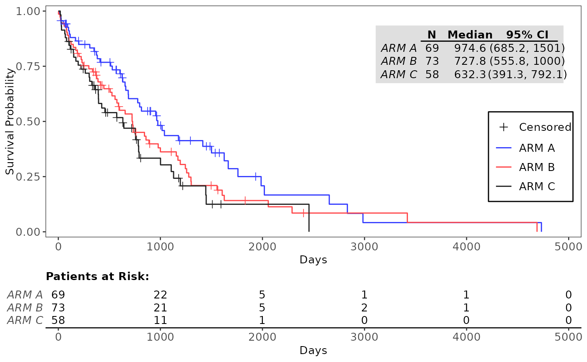
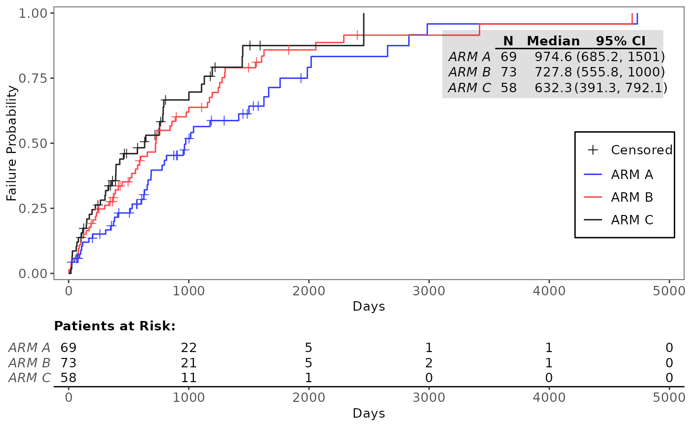
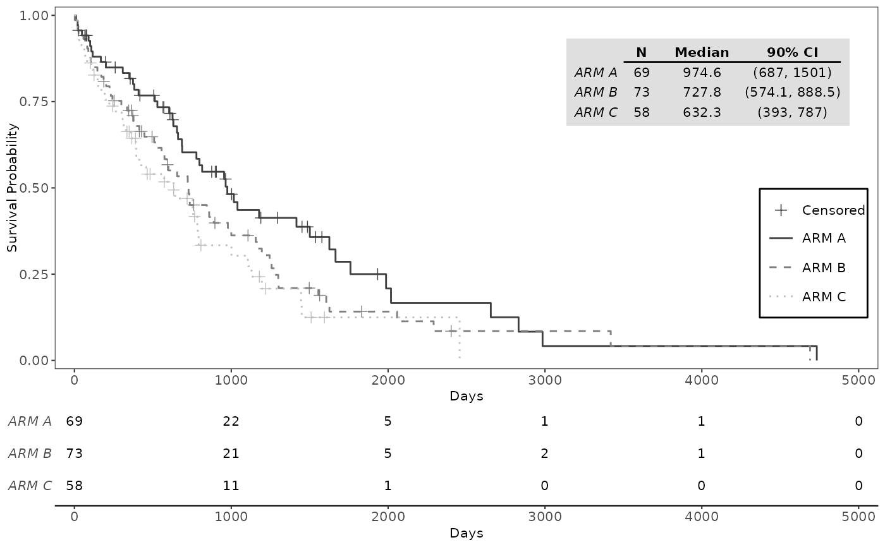
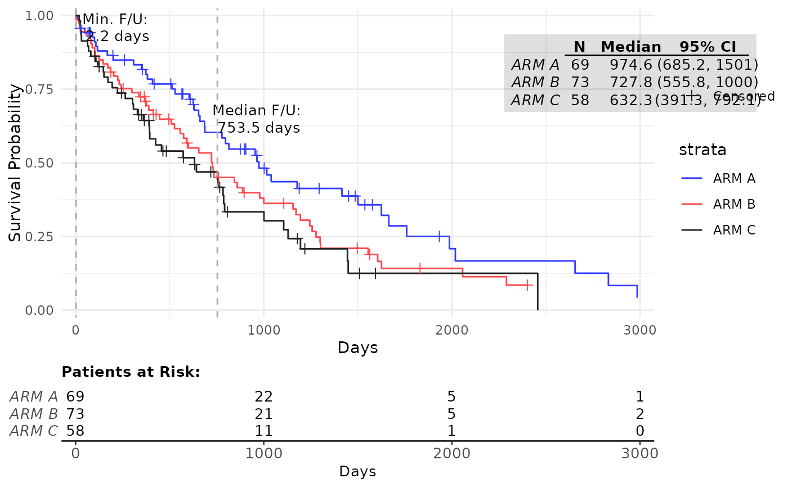
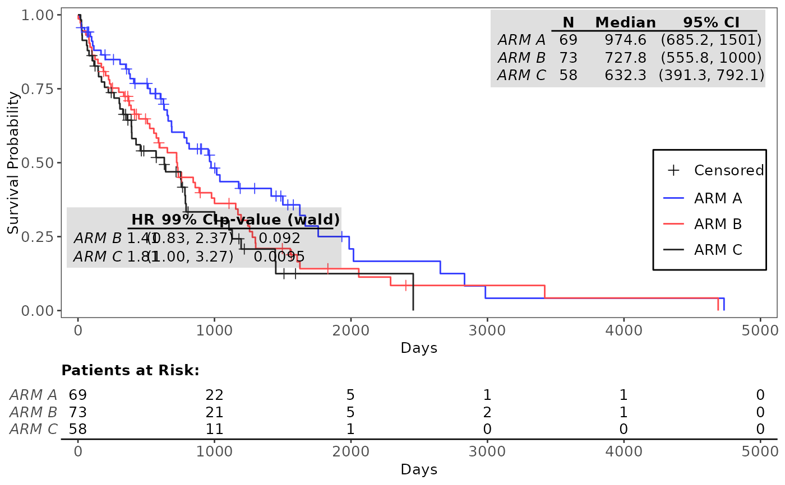

![[Stable]](figures/lifecycle-stable.svg)
From a survival model, a graphic is rendered along with tabulated annotation including the number of patient at risk at given time and the median survival per group.
Usage
g_km(
df,
variables,
control_surv = control_surv_timepoint(),
col = NULL,
lty = NULL,
lwd = 0.5,
censor_show = TRUE,
pch = 3,
size = 2,
max_time = NULL,
xticks = NULL,
xlab = "Days",
yval = c("Survival", "Failure"),
ylab = paste(yval, "Probability"),
ylim = NULL,
title = NULL,
footnotes = NULL,
font_size = 10,
ci_ribbon = FALSE,
annot_at_risk = TRUE,
annot_at_risk_title = TRUE,
annot_surv_med = TRUE,
annot_coxph = FALSE,
annot_stats = NULL,
annot_stats_vlines = FALSE,
control_coxph_pw = control_coxph(),
ref_group_coxph = NULL,
control_annot_surv_med = control_surv_med_annot(),
control_annot_coxph = control_coxph_annot(),
legend_pos = NULL,
rel_height_plot = 0.75,
ggtheme = NULL,
as_list = FALSE,
draw = lifecycle::deprecated(),
newpage = lifecycle::deprecated(),
gp = lifecycle::deprecated(),
vp = lifecycle::deprecated(),
name = lifecycle::deprecated(),
annot_coxph_ref_lbls = lifecycle::deprecated(),
position_coxph = lifecycle::deprecated(),
position_surv_med = lifecycle::deprecated(),
width_annots = lifecycle::deprecated()
)Arguments
- df
(
data.frame)
data set containing all analysis variables.- variables
-
(named
list)
variable names. Details are:tte(numeric)
variable indicating time-to-event duration values.is_event(logical)
event variable.TRUEif event,FALSEif time to event is censored.arm(factor)
the treatment group variable.strata(characterorNULL)
variable names indicating stratification factors.
- control_surv
-
(
list)
parameters for comparison details, specified by using the helper functioncontrol_surv_timepoint(). Some possible parameter options are:conf_level(proportion)
confidence level of the interval for survival rate.conf_type(string)"plain"(default),"log","log-log"for confidence interval type, see more insurvival::survfit(). Note that the option "none" is no longer supported.
- col
(
character)
lines colors. Length of a vector should be equal to number of strata fromsurvival::survfit().- lty
(
numeric)
line type. If a vector is given, its length should be equal to the number of strata fromsurvival::survfit().- lwd
(
numeric)
line width. If a vector is given, its length should be equal to the number of strata fromsurvival::survfit().- censor_show
(
flag)
whether to show censored observations.- pch
(
string)
name of symbol or character to use as point symbol to indicate censored cases.- size
(
numeric(1))
size of censored point symbols.- max_time
(
numeric(1))
maximum value to show on x-axis. Only data values less than or up to this threshold value will be plotted (defaults toNULL).- xticks
(
numericorNULL)
numeric vector of tick positions or a single number with spacing between ticks on the x-axis. IfNULL(default),labeling::extended()is used to determine optimal tick positions on the x-axis.- xlab
(
string)
x-axis label.- yval
(
string)
type of plot, to be plotted on the y-axis. Options areSurvival(default) andFailureprobability.- ylab
(
string)
y-axis label.- ylim
(
numeric(2))
vector containing lower and upper limits for the y-axis, respectively. IfNULL(default), the default scale range is used.- title
(
string)
plot title.- footnotes
(
string)
plot footnotes.- font_size
(
numeric(1))
font size to use for all text.- ci_ribbon
(
flag)
whether the confidence interval should be drawn around the Kaplan-Meier curve.- annot_at_risk
(
flag)
compute and add the annotation table reporting the number of patient at risk matching the main grid of the Kaplan-Meier curve.- annot_at_risk_title
(
flag)
whether the "Patients at Risk" title should be added above theannot_at_risktable. Has no effect ifannot_at_riskisFALSE. Defaults toTRUE.- annot_surv_med
(
flag)
compute and add the annotation table on the Kaplan-Meier curve estimating the median survival time per group.- annot_coxph
(
flag)
whether to add the annotation table from asurvival::coxph()model.- annot_stats
(
stringorNULL)
statistics annotations to add to the plot. Options aremedian(median survival follow-up time) andmin(minimum survival follow-up time).- annot_stats_vlines
(
flag)
add vertical lines corresponding to each of the statistics specified byannot_stats. Ifannot_statsisNULLno lines will be added.- control_coxph_pw
-
(
list)
parameters for comparison details, specified using the helper functioncontrol_coxph(). Some possible parameter options are:pval_method(string)
p-value method for testing hazard ratio = 1. Default method is"log-rank", can also be set to"wald"or"likelihood".ties(string)
method for tie handling. Default is"efron", can also be set to"breslow"or"exact". See more insurvival::coxph()conf_level(proportion)
confidence level of the interval for HR.
- ref_group_coxph
(
stringorNULL)
level of arm variable to use as reference group in calculations forannot_coxphtable. IfNULL(default), uses the first level of the arm variable.- control_annot_surv_med
(
list)
parameters to control the position and size of the annotation table added to the plot whenannot_surv_med = TRUE, specified using thecontrol_surv_med_annot()function. Parameter options are:x,y,w,h, andfill. Seecontrol_surv_med_annot()for details.- control_annot_coxph
(
list)
parameters to control the position and size of the annotation table added to the plot whenannot_coxph = TRUE, specified using thecontrol_coxph_annot()function. Parameter options are:x,y,w,h,fill, andref_lbls. Seecontrol_coxph_annot()for details.- legend_pos
(
numeric(2)orNULL)
vector containing x- and y-coordinates, respectively, for the legend position relative to the KM plot area. IfNULL(default), the legend is positioned in the bottom right corner of the plot, or the middle right of the plot if needed to prevent overlapping.- rel_height_plot
(
proportion)
proportion of total figure height to allocate to the Kaplan-Meier plot. Relative height of patients at risk table is then1 - rel_height_plot. Ifannot_at_risk = FALSEoras_list = TRUE, this parameter is ignored.- ggtheme
(
theme)
a graphical theme as provided byggplot2to format the Kaplan-Meier plot.- as_list
(
flag)
whether the twoggplotobjects should be returned as a list whenannot_at_risk = TRUE. IfTRUE, a named list with two elements,plotandtable, will be returned. IfFALSE(default) the patients at risk table is printed below the plot viacowplot::plot_grid().- draw
![[Deprecated]](figures/lifecycle-deprecated.svg) This function no longer generates
This function no longer generates grobobjects.- newpage
- This function no longer generates
grobobjects. - gp
- This function no longer generates
grobobjects. - vp
- This function no longer generates
grobobjects. - name
- This function no longer generates
grobobjects. - annot_coxph_ref_lbls
- Please use the
ref_lblselement ofcontrol_annot_coxphinstead. - position_coxph
- Please use the
xandyelements ofcontrol_annot_coxphinstead. - position_surv_med
- Please use the
xandyelements ofcontrol_annot_surv_medinstead. - width_annots
- Please use the
welement ofcontrol_annot_surv_med(forsurv_med) andcontrol_annot_coxph(forcoxph)."
Examples
library(dplyr)
df <- tern_ex_adtte %>%
filter(PARAMCD == "OS") %>%
mutate(is_event = CNSR == 0)
variables <- list(tte = "AVAL", is_event = "is_event", arm = "ARMCD")
# Basic examples
g_km(df = df, variables = variables)

g_km(df = df, variables = variables, yval = "Failure")

# Examples with customization parameters applied
g_km(
df = df,
variables = variables,
control_surv = control_surv_timepoint(conf_level = 0.9),
col = c("grey25", "grey50", "grey75"),
annot_at_risk_title = FALSE,
lty = 1:3,
font_size = 8
)

g_km(
df = df,
variables = variables,
annot_stats = c("min", "median"),
annot_stats_vlines = TRUE,
max_time = 3000,
ggtheme = ggplot2::theme_minimal()
)

# Example with pairwise Cox-PH analysis annotation table, adjusted annotation tables
g_km(
df = df, variables = variables,
annot_coxph = TRUE,
control_coxph = control_coxph(pval_method = "wald", ties = "exact", conf_level = 0.99),
control_annot_coxph = control_coxph_annot(x = 0.26, w = 0.35),
control_annot_surv_med = control_surv_med_annot(x = 0.8, y = 0.9, w = 0.35)
)
